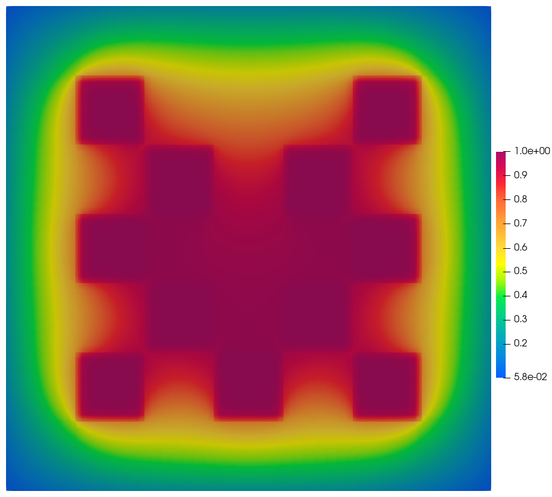

3.3.2. Adjoint Checkerboard Absorption Response
This example reformulates the two-dimensional fixed-source checkerboard problem as an adjoint calculation. The response of interest is the total absorption reaction rate over all eleven absorbing (gray) squares. Instead of applying the physical source in the central square, the adjoint problem places the absorption response function in every absorbing square and evaluates the resulting adjoint importance function at the original source region.
3.3.2.1. Import the OpenSn objects
[ ]:
if "opensn_console" not in globals():
from mpi4py import MPI
from pyopensn.aquad import GLCProductQuadrature2DXY
from pyopensn.context import Finalize, UseColor
from pyopensn.logvol import RPPLogicalVolume
from pyopensn.mesh import OrthogonalMeshGenerator
from pyopensn.post import VolumePostprocessor
from pyopensn.solver import DiscreteOrdinatesProblem, SteadyStateSourceSolver
from pyopensn.source import VolumetricSource
from pyopensn.xs import MultiGroupXS
rank = MPI.COMM_WORLD.rank
UseColor(False)
3.3.2.2. Reproduce the checkerboard geometry
The domain is a \(7 \times 7\) cm square discretized with ten cells per centimeter, ensuring that mesh nodes align with the edges of each one-centimeter material square. The eleven absorber squares share one block ID, while the scattering background uses another. The central black square has a separate block ID marking the original forward-source region.
[ ]:
domain_length = 7.0
cells_per_cm = 10
num_cells = int(domain_length * cells_per_cm)
nodes = [i / cells_per_cm for i in range(num_cells + 1)]
mesh = OrthogonalMeshGenerator(node_sets=[nodes, nodes]).Execute()
mesh.SetOrthogonalBoundaries()
BACKGROUND = 0
ABSORBER = 1
FORWARD_SOURCE = 2
mesh.SetUniformBlockID(BACKGROUND)
absorber_origins = [
(1.0, 1.0), (3.0, 1.0), (5.0, 1.0),
(2.0, 2.0), (4.0, 2.0),
(1.0, 3.0), (5.0, 3.0),
(2.0, 4.0), (4.0, 4.0),
(1.0, 5.0), (5.0, 5.0),
]
for x_min, y_min in absorber_origins:
absorber_square = RPPLogicalVolume(
xmin=x_min, xmax=x_min + 1.0,
ymin=y_min, ymax=y_min + 1.0,
infz=True,
)
mesh.SetBlockIDFromLogicalVolume(
absorber_square, ABSORBER, True
)
forward_source_region = RPPLogicalVolume(
xmin=3.0, xmax=4.0,
ymin=3.0, ymax=4.0,
infz=True,
)
mesh.SetBlockIDFromLogicalVolume(
forward_source_region, FORWARD_SOURCE, True
)
3.3.2.3. Define the materials
The graybackground and central source square are pure scatterers with \(\sigma_t=\sigma_s=1\) \(\text{cm}^{-1}\).
Each gray square is a pure absorber with \(\sigma_t=\sigma_a=10\) \(\text{cm}^{-1}\).
[ ]:
scattering_xs = MultiGroupXS()
scattering_xs.CreateSimpleOneGroup(sigma_t=1.0, c=1.0)
absorber_sigma_a = 10.0
absorber_xs = MultiGroupXS()
absorber_xs.CreateSimpleOneGroup(
sigma_t=absorber_sigma_a, c=0.0
)
3.3.2.4. Convert the response into an adjoint source
For the forward problem, the desired response is
Therefore the adjoint source is \(q^\dagger=\sigma_a=10\) throughout the gray block ID and zero elsewhere. VolumetricSource uses the same interface for forward and adjoint sources; setting adjoint=True on the transport problem determines how OpenSn interprets it.
[ ]:
adjoint_source = VolumetricSource(
block_ids=[ABSORBER],
group_strength=[absorber_sigma_a],
)
3.3.2.5. Solve the adjoint transport problem
The mesh, 64-angle quadrature, material map, and vacuum boundaries are identical to those in the corresponding forward calculation. The adjoint option transposes the transport operator while retaining the same physical cross sections.
[ ]:
quadrature = GLCProductQuadrature2DXY(
n_polar=2, n_azimuthal=64, scattering_order=0
)
problem = DiscreteOrdinatesProblem(
mesh=mesh,
num_groups=1,
groupsets=[
{
"groups_from_to": (0, 0),
"angular_quadrature": quadrature,
"inner_linear_method": "petsc_gmres",
"l_abs_tol": 1.0e-9,
"l_max_its": 300,
"gmres_restart_interval": 30,
}
],
xs_map=[
{"block_ids": [BACKGROUND, FORWARD_SOURCE], "xs": scattering_xs},
{"block_ids": [ABSORBER], "xs": absorber_xs},
],
volumetric_sources=[adjoint_source],
boundary_conditions=[
{"name": "xmin", "type": "vacuum"},
{"name": "xmax", "type": "vacuum"},
{"name": "ymin", "type": "vacuum"},
{"name": "ymax", "type": "vacuum"},
],
options={"adjoint": True},
)
solver = SteadyStateSourceSolver(problem=problem, compute_balance=True)
solver.Initialize()
solver.Execute()
3.3.2.6. Evaluate the absorption response
Forward-adjoint duality gives
The original forward source has unit strength. Consequently, its inner product with the adjoint flux is simply the volume-integrated adjoint scalar flux over block ID FORWARD_SOURCE. This value should reproduce the absorption rate from the forward checkerboard problem.
[ ]:
response_postprocessor = VolumePostprocessor(
problem=problem,
value_type="integral",
block_ids=[FORWARD_SOURCE],
)
response_postprocessor.Execute()
adjoint_response = response_postprocessor.GetValue()[0][0]
forward_response_reference = 0.969008500
relative_difference = (
abs(adjoint_response - forward_response_reference)
/ forward_response_reference
)
if rank == 0:
print(f"ADJOINT_CHECKERBOARD_RESPONSE={adjoint_response:.8e}")
print(
f"ADJOINT_CHECKERBOARD_RELATIVE_DIFFERENCE="
f"{relative_difference:.8e}"
)
assert relative_difference < 1.0e-6
3.3.2.7. Export and visualize the adjoint flux
After running the generated Python input, use the following code to export the adjoint scalar flux. It is kept in Markdown so the regression test does not create output files.
from pyopensn.fieldfunc import FieldFunctionGridBased
adjoint_flux = problem.GetScalarFluxFieldFunction()[0]
FieldFunctionGridBased.ExportMultipleToPVTU(
[adjoint_flux], "Flux/AdjointCheckerboard_Phi"
)

3.3.2.8. Next steps
Compare the adjoint importance map with the forward scalar-flux map. The forward flux shows where particles from the center travel, while the adjoint flux shows which locations and directions most strongly influence absorption in the black squares.
[ ]:
if "opensn_console" not in globals():
from IPython import get_ipython
if get_ipython() is not None:
Finalize()
MPI.Finalize()